1. Последовательность как функция. Последовательность можно понимать как частный вид функции. Числовая последовательность определяется правилом, по которому для всякого натурального числа n можно вычислить n-й член этой последовательности. Таким образом, областью определения последовательности как функции является множество N натуральных чисел. Значением этой функции является число. Если функцию обозначить буквой f, то ее значение в точке n запишется как f(n). Однако для последовательностей традиционно выбирается другое обозначение — члены последовательности обозначаются малыми латинскими буквами: a, b, c и т. д., а значение аргумента n пишется в виде индекса: an, bn, cn и т. д.
Главная особенность последовательности состоит в том, что значения аргумента (номера членов последовательности) расположены друг за другом, и их можно перебирать, двигаясь от одного номера к следующему. Это позволяет использовать особый способ задания последовательности, который неприменим к функции общего вида и называется рекуррентным. При обычных способах задания функции можно взять любое значение аргумента и для него найти соответствующее значение функции, не думая об остальных значениях аргумента. При рекуррентном способе для вычисления nго члена надо знать предыдущие.
Числовые последовательности
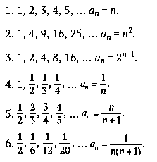
2. Рекуррентные соотношения. Рекуррентные формулы, выражающие член последовательности через предыдущие, нам встречались и ранее (например, арифметическая и геометрическая прогрессии).
Крекуррентным соотношениям также относятся следующие последовательности:
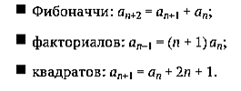
Чтобы задать последовательность, недостаточно только написать рекуррентное соотношение. Необходимо указать также начальные члены последовательности
Так, арифметическая прогрессия будет однозначно определена, если кроме разности d, входящей в рекуррентное соотношение, будет указан первый член a1. Для последовательности Фибоначчи нужно знать два первых члена. Если взять a1 = 1, a2 = 1, то получится стандартная последовательность чисел Фибоначчи: 1, 1, 2, 3, 5, 8, 13, 21, …
В последовательности факториалов, приняв a1 = 1, получим, что an является произведением натуральных чисел от 1 до n: an = 1 × 2 × … × n = n!. Если в последовательности квадратов взять a1 = 1, то n-й член последовательности получится в виде суммы первых n нечетных чисел: an = 1 + 3 + 5 + … + 2n + 1 = n 2 .
Последовательность сумм{an} — данная последовательность;
{sn} — последовательность сумм:
s1 = a1,
s2 = a1 + a2
s3 = a1 + a2 + a3,
sn+1 = sn + an+1.
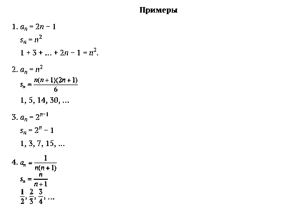
Последовательность разностей
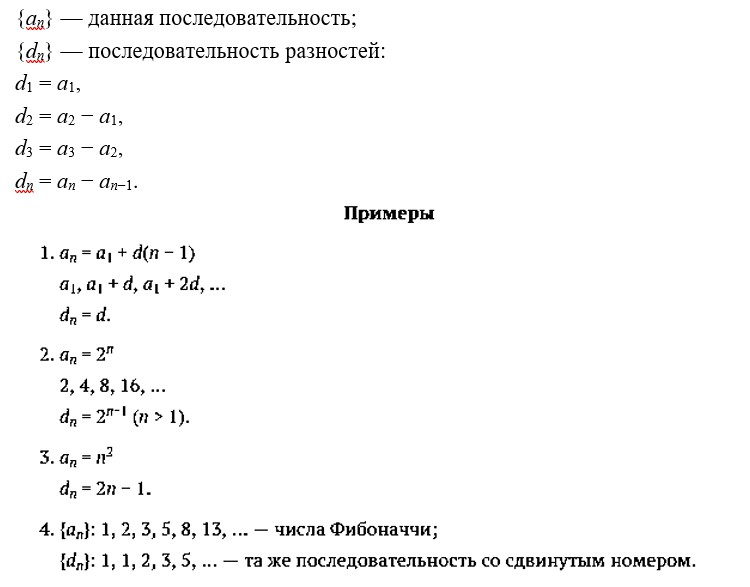
3. Общий член последовательности. Последовательность может быть задана и как обычная функция, например формулой общего члена: an = f(n). Обычные функции y = f(x), заданные для всех x ≥ 1, порождают последовательности значений в целых точках: a1 = f(1), a2 = f(2), …, an = f(n), …
Зная рекуррентное соотношение, часто можно найти формулу общего члена. Нам уже известны формулы общего члена арифметической и геометрической прогрессий
Формула общего члена для последовательности чисел Фибоначчи 1, 1, 2, 3, 5, … имеет такой вид: 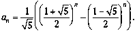
4. Свойства последовательностей.
1) Действия над последовательностями. Так же как над произвольными функциями (заданными на одном и том же множестве), над последовательностями можно производить арифметические операции: сложение (вычитание) и умножение (деление).
Если последовательность b1, b2, … постоянна, т. е. bn = b для любого n, то произведение последовательностей a1, a2, … и b1, b2, … выглядит так: ba1, ba2, … и называется произведением постоянного числа b на последовательность a1, a2, …
2) Функциональные свойства. Числовые последовательности могут обладать свойствами, которые обсуждались при изучении обычных функций.
Числовая последовательность называется возрастающей, если каждый последующий ее член больше предыдущего, иными словами, если для всякого n > 1 верно неравенство an > an−1 (для убывающей числовой последовательности an < an−1).
Последовательность называется монотонной, если она является либо возрастающей, либо убывающей.
Последовательность a1, a2, … можно изобразить «графиком», который будет состоять из отдельных точек координатной плоскости. Так же как и для обычных функций, по графику можно судить о различных свойствах последовательностей. Возрастающие и убывающие последовательности изображаются точками, лежащими на графиках монотонных функций.
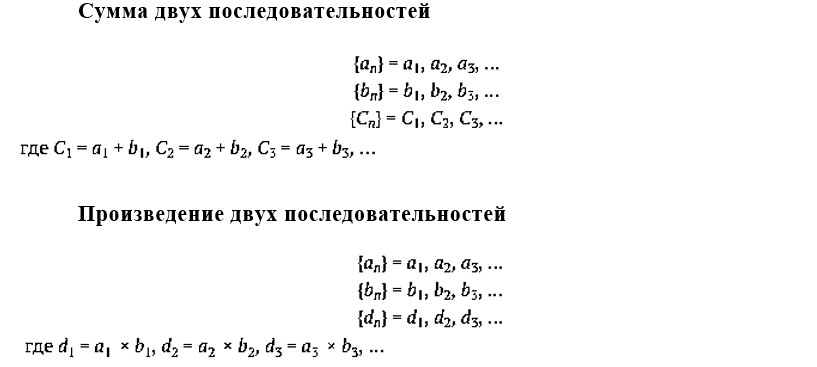
5. Ограниченные последовательности.Последовательность a1, a2, a3, … называется ограниченной, если для ее членов можно указать общую границу, т. е. такое число C, что неравенство |an| ≤ C выполняется для всех номеров n
Если последовательность является возрастающей, то для ее ограниченности достаточно найти число C такое, что an ≤ C при всех n. Для ограниченности убывающей последовательности достаточно проверить неравенство вида an ≥ C, которое должно выполняться для всех n.
Таким образом, если для всех членов последовательности выполняется неравенство an ≤ C (an ≥ C), то говорят, что она ограничена сверху (снизу). Если мы говорим об ограниченной последовательности, то ясно, что она ограничена как сверху, так и снизу.
Ограниченные последовательности
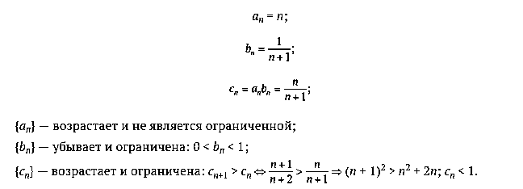
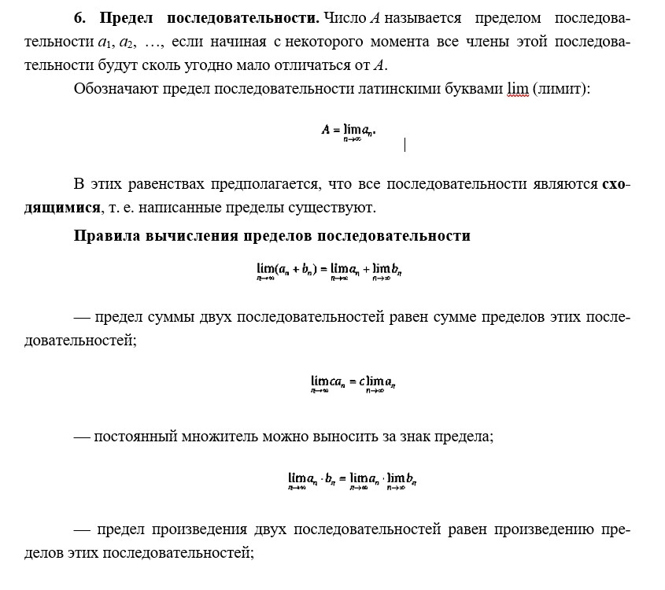
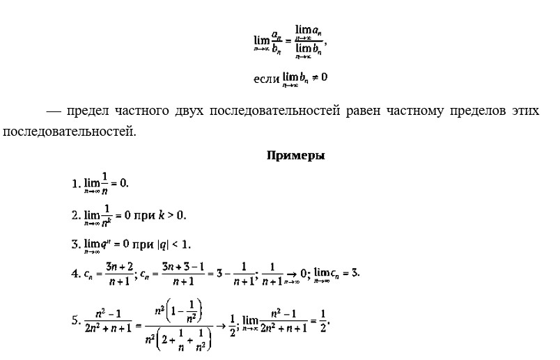
7. Бесконечно убывающая геометрическая прогрессия.я. Геометрическую прогрессию называют бесконечно убывающей, если ее знаменатель q по модулю меньше единицы: |q| < 1.
Такое название возникло потому, что при |q| < 1 общий член прогрессии an = a1q n−1 становится сколь угодно малым, бесконечно убывает.
Найдем сумму бесконечно убывающей геометрической прогрессии с первым членом a1 и знаменателем q (|q| < 1).
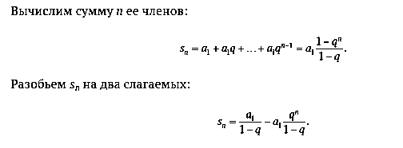
Первое слагаемое постоянно, а второе бесконечно уменьшается с ростом n, поэтому при сложении членов геометрической прогрессии до бесконечности мы отбрасываем это слагаемое и получаем формулу
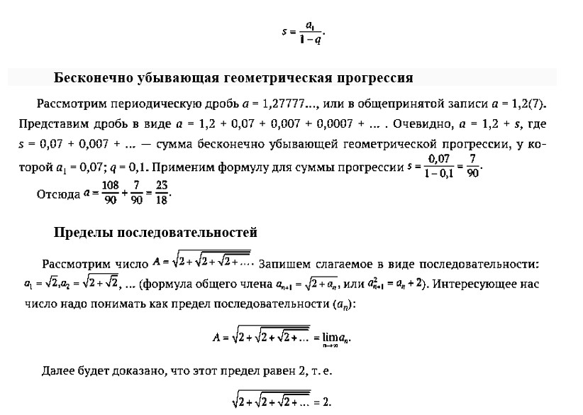
Понятно, что одни последовательности имеют пределы (сходящиеся последовательности), другие — нет (расходящиеся последовательности).
Для доказательства сходимости последовательности часто бывает полезен следующий признак.
Признак сходимости последовательности. Если последовательность монотонна и ограничена, то она имеет предел
Важным геометрическим примером применения пределов последовательностей является вычисление длины окружности и площади круга как пределов периметров и площадей последовательностей многоугольников.
Пусть дан круг радиуса R. Рассмотрим последовательность Mn правильных nугольников (n ≥ 3), вписанных в эту окружность.
Обозначим через pn периметр Mn, а через Sn — его площадь. Легко представить себе (но непросто доказать), что последовательности pn и Sn возрастают.
Если p — длина окружности (границы взятого круга), а S — площадь круга, то pn < p и Sn < S. Это означает, что последовательности pn и Sn монотонны и ограниченны. Значит, по признаку сходимости, они должны иметь предел. Опять же «геометрически ясно», что и т. е. длину окружности и площадь круга можно вычислить как пределы последовательностей периметров и площадей правильных вписанных многоугольников.
Вычисление длины окружности и площади круга
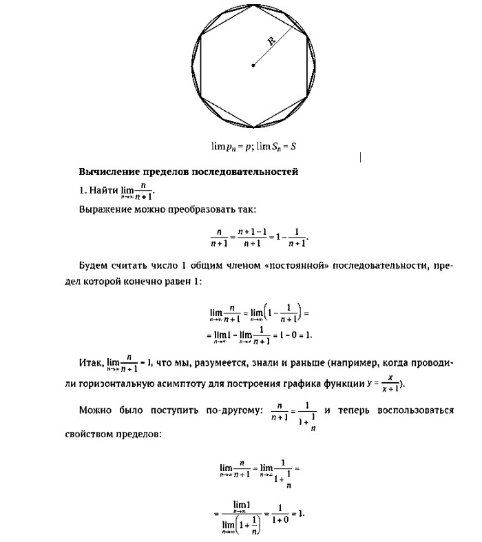
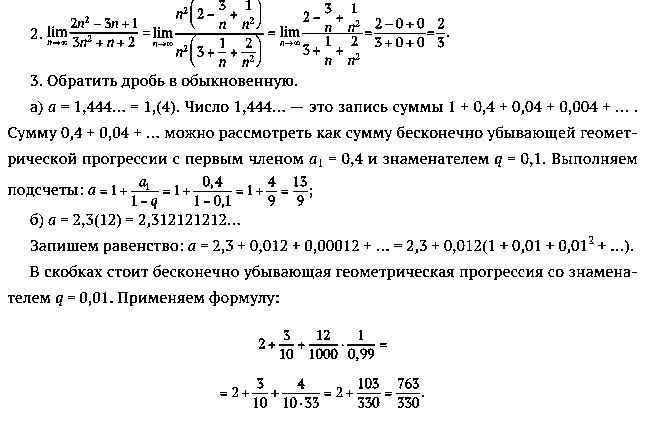
ВОПРОСЫ И ЗАДАНИЯ
1. Какими рекуррентными соотношениями определяются прогрессии?
2. Какая последовательность называется ограниченной
3. Что такое предел последовательности?
4. Какой признак существования предела вы знаете?
5. Чему равна сумма бесконечно убывающей геометрической прогрессии?
6. Какие геометрические величины можно вычислить с помощью пределов последовательности?